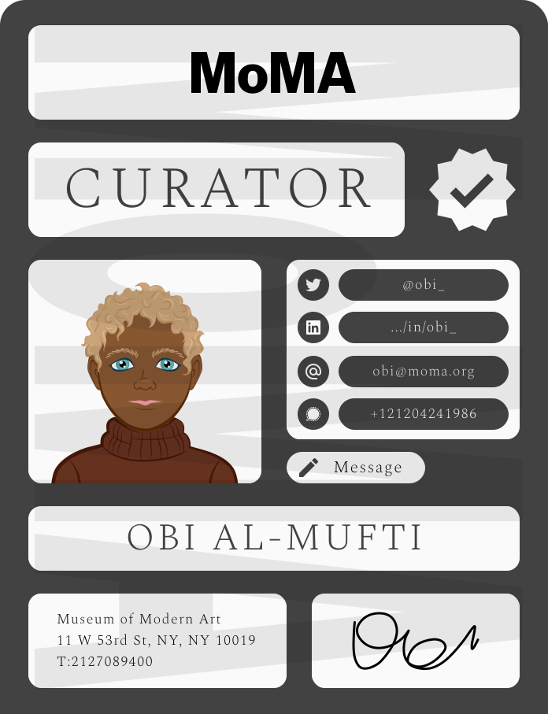

By FRANCIS CACCAVALE
This mobile app interface sets a line of communication between two user sets (newspaper/media staff and museum curators), streamlining content creation as to a blog or article. With this line of communication, critics can prepare their research and an ultimate goal of asking a curator for a private walkthrough personally or utilizing Google virtually.
Critics will receive content for their line of work while curators will have press at their exhibit, that is, a win-win scenario.
Museums often act iteratively with 'pop-up' like exhibitions focusing different themes: modernized buildings with new layouts, new collections, retrospective politics, new artists, new archaelogical findings, loan items from foreign organisations et cetera.
The New York Times posted fifty-five detailed articles about art exhibit topics in february, 2023 alone.
Even if any relative controversy occurs in the art world, a curator's perspective may be a highly sought after inquiry for comment.
'Pop-up' exhibits acting iteratively, may complement computational speed.
As this design is meant to rationalise a one-to-one correspondence (media staff and museum curators), a verification system will have to be set.
Digitized badges generated by the app below:
Press badge: first-person perspective
The text-boxes have an off-white and grayish background color (#FAFAFA) with black text, which has a newspaper feel.
Curator badge: second-person perspective
The text-boxes have an off-white and grayish background color (#FAFAFA) with black text, which has a feel of a newspaper.
A high-fidelity prototype was made with Figma. Below

Frame 1 represents a login screen. Frame 2 is the primary screen being the homepage. Frame 3 is a 'news' screen. Frame 4 is an overlay of a digitized badge initialized by the kebab.
A login screen will hint and introduce the primary colors of the app being a charcoal (#424242) and a dullish pink (#E9E0DE). See Frame 1 above
Another screen will represent the homepage with, at center, an image carousel of any example within any given exhibit. Clicking the exhibit image points directly to a corresponding exhibit summary page, and within such page is a path to view the curator's badge. A hard search is available at the top of the screen. See Frame 2 above
Underneath the image carousel is a type of filter as any user may tap keywords to narrow a type of exhibit through medium, style, period, ex. 'sculpture', 'realism', 'italian renaissance'.
Available to each user is a news feed with latest topics in the art world. Any user can hard search a keyword or news outlet. See Frame 3 above

A login screen will hint and introduce the primary colors of the app being a charcoal (#424242) and a dullish pink (#E9E0DE). See Frame 1 above
Another screen will represent the homepage with, at center, an image carousel of any example within any given exhibit. Clicking the exhibit image points directly to a corresponding exhibit summary page, and within such page is a path to view the curator's badge. A hard search is available at the top of the screen. See Frame 2 above
Underneath the image carousel is a type of filter as any user may tap keywords to narrow a type of exhibit through medium, style, period, ex. 'sculpture', 'realism', 'italian renaissance'.

Available to each user is a news feed with latest topics in the art world. Any user can hard search a keyword or news outlet. See Frame 3 above
Frame 4 is an overlay featuring a 'Press' verification badge initialized by the kebab, being a first-person perspective. Within the badge, a user can find a path to their inbox or settings.
This application approach and interface prototype will have to, through time and feedback, existentially resolve four scenarios to have a proof of concept:
Last updated: May, 2023